Barley results
Complete fitted model objects, all metric and prediction tables, tuning candidates, selected settings, coefficients, components, diagnostics, configuration, session information, and checksums.
Download ZIP Run metadataTwo crops. Sixteen provinces. Eight methods.
Explore the actual calculations, including weak results and differences between tuning selection and later performance.
Methods and hyperparameters are selected from tuning, not later rankings. Each rolling fit uses earlier responses. Full seasonal weather is available for each predicted year.
All methods use the same years and inputs. Yield units are dt/ha (100 kg/ha). R² is predictive R²; interval coverage is observed coverage of empirical 80% bands.
| Method | RMSE | MAE | Bias | R² | 80% coverage | Band width |
|---|---|---|---|---|---|---|
| Hierarchical tuning-selected | 3.367 | 2.653 | -0.207 | 0.669 | 93.8% | 11.835 |
| Ensemble | 3.986 | 3.190 | -1.107 | 0.537 | 87.5% | 11.506 |
| Local ridge | 4.287 | 3.414 | -1.703 | 0.464 | 82.1% | 10.942 |
| Panel ridge | 4.345 | 3.533 | -0.661 | 0.450 | 88.4% | 12.875 |
| PCR | 4.422 | 3.238 | 0.400 | 0.430 | 92.9% | 15.956 |
| Stress lag | 4.573 | 3.571 | -0.977 | 0.390 | 92.0% | 16.300 |
| Trend | 4.630 | 3.418 | -0.158 | 0.375 | 87.5% | 12.436 |
| Persistence | 4.968 | 3.912 | 0.178 | 0.280 | 90.2% | 15.560 |
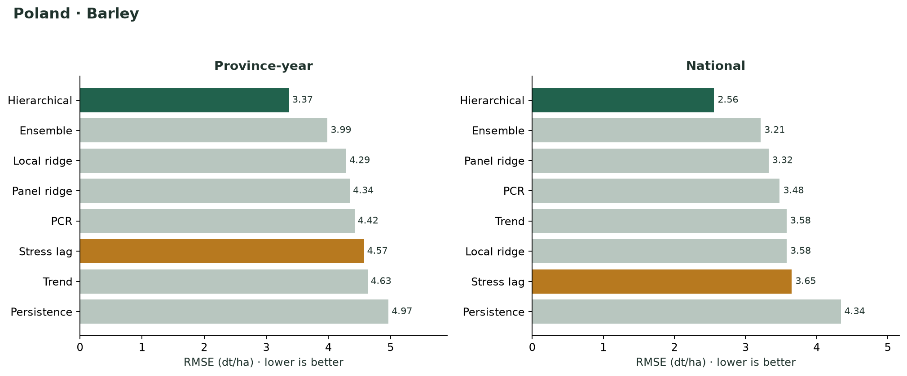
Switch methods or provinces. The observed 2019 yield is displayed for comparison but was excluded from model fitting. Earlier final-model fitted values are omitted from this chart.
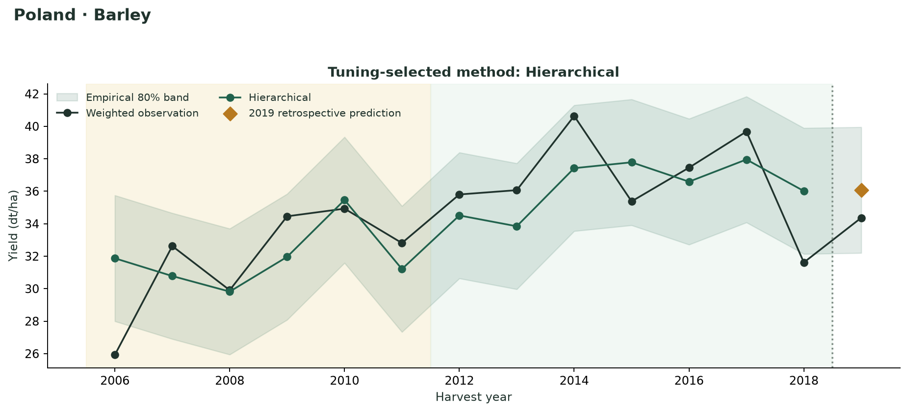
Shading separates tuning (2006–2011) and later evaluation (2012–2018). The 2019 marker uses the model fitted through 2018. Intervals share tuning-calibrated widths and do not adapt to local weather extrapolation.
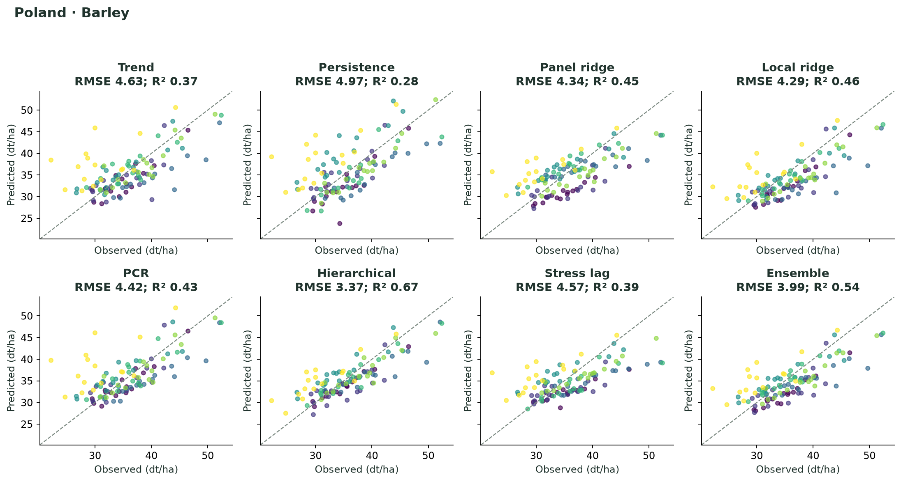
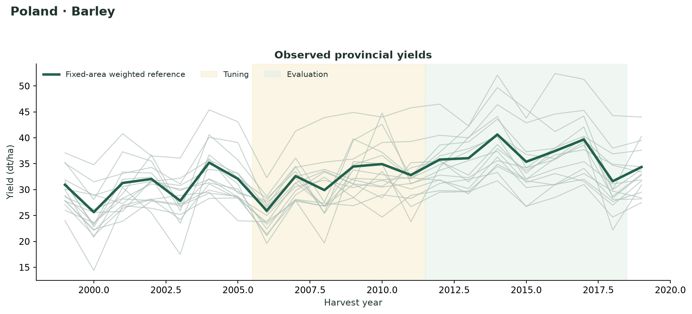
Shown for the selected chart method. Errors are prediction minus observation; these 16 observations are not part of the 2012–2018 metric table.
Inspect geographic differences, difficult years, and the trade-off between interval width and coverage.
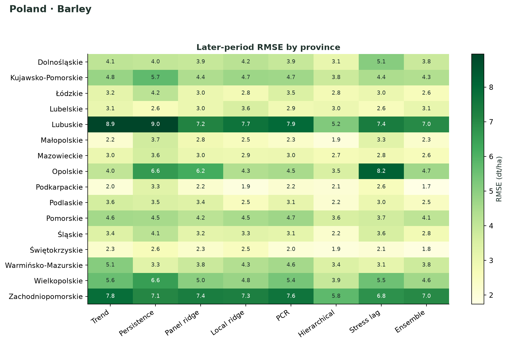
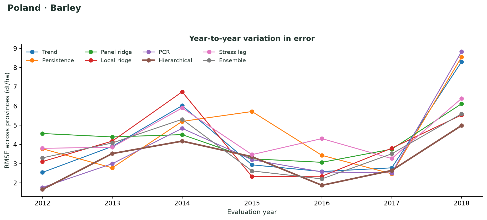
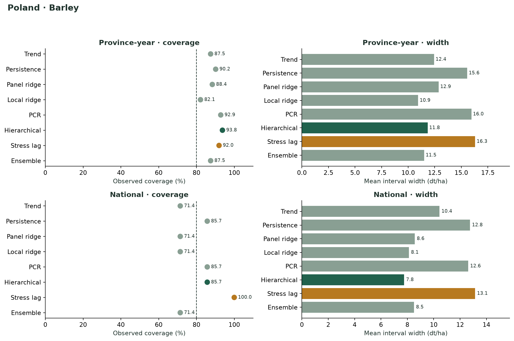
These figures describe final models fitted through 2018. They are not cross-validated effect estimates, and coefficients or decompositions do not establish causal responses.
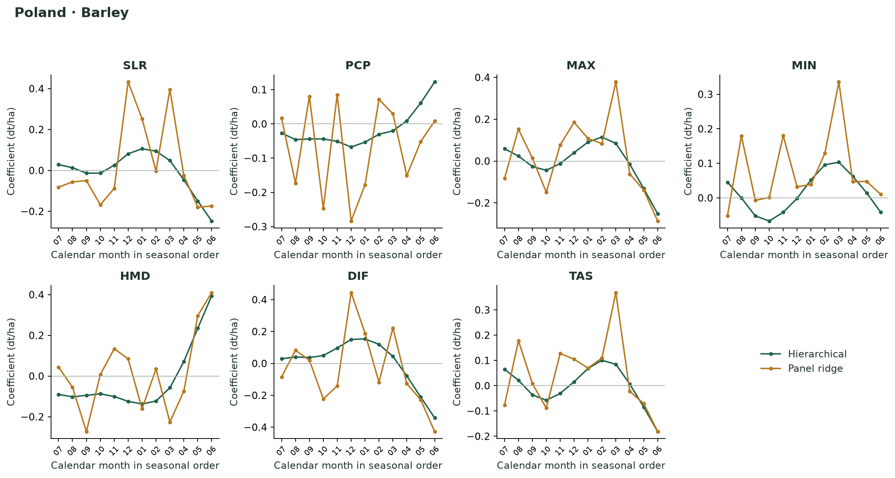
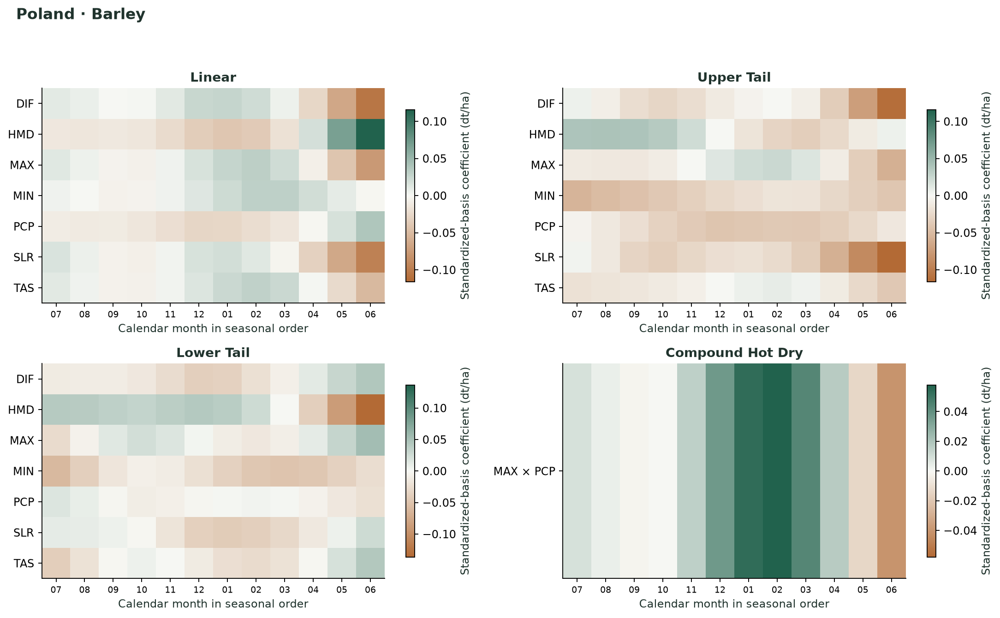
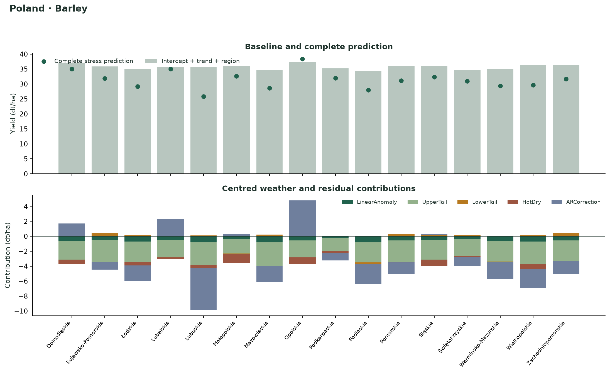
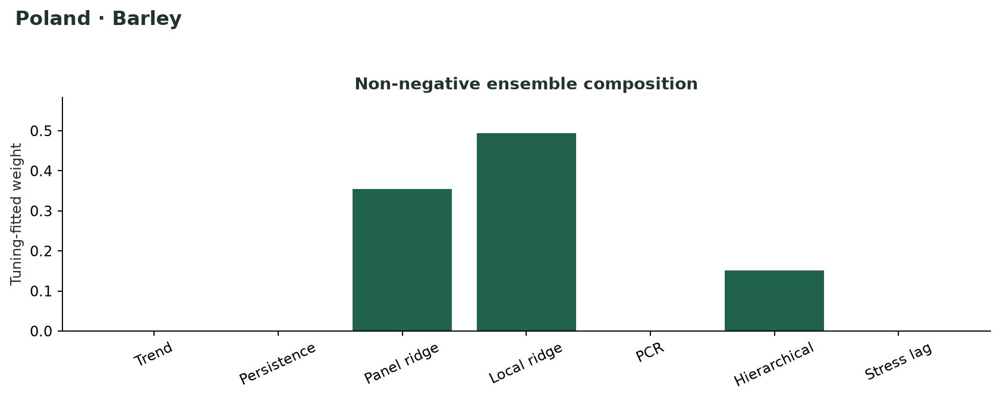
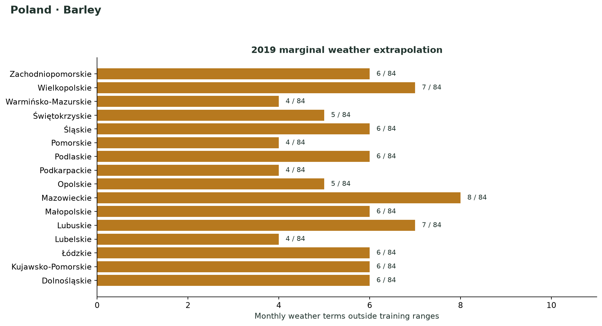
Complete fitted model objects, all metric and prediction tables, tuning candidates, selected settings, coefficients, components, diagnostics, configuration, session information, and checksums.
Download ZIP Run metadataThe same complete export, including fitted model objects, for wheat, using an agricultural year ending in July and identical evaluation years.
Download ZIP Run metadatalibrary(yieldlag)
comparison <- readRDS("barley/model_comparison.rds")
summary(comparison)
model <- get_crop_model(comparison)
future <- subset(comparison$prediction_panel, Year == 2019)
predict(model, future, interval = "prediction")The ZIP contains the full comparison and fitted model list. Input provenance uses portable package-relative references.
install.packages(c("remotes", "jsonlite"))
remotes::install_github("MR-Eini/yieldlag", ref = "v0.2.0")
# Download run_poland_website.R, then from a terminal:
# Rscript run_poland_website.R barley
# Rscript run_poland_website.R wheat
# Configuration used in both runs:
config <- crop_model_config(
methods = crop_model_methods(),
stress_temperature = "MAX",
stress_precipitation = "PCP", robust = TRUE
)
# Package default grids, initial_fraction = 0.35,
# tuning_fraction = 0.30, interval_level = 0.80.Download the R script. Package source: v0.2.0, commit 29e1674. Both runs retain all 84 terms and fit robustly where supported. Outputs preserve the full tuning grid rather than only its winning row.